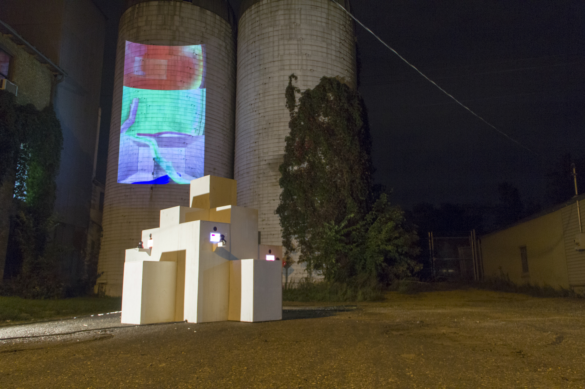

Hotel Hotel is an exploration of the relationship between living organisms and architecture. It reflects on the transience of life in the city, on temporary abodes, on sentient inhabitants, on occupying and moving through space, and on the interactions that occur in transit. Hotel Hotel's occupants are species of insects, such as caterpillars, beetles, and cockroaches. They inhabit intensely colored rooms that dramatically contrast their individual colors and movements. The rooms and insects are projected at architectural scale, and in turn, the insects populate a building, metaphorically embodying the complexity of peoples, customs, cultures, and individual traits that make up the citizens of contemporary cities.
A collaboration with Kate Casanova and Daniel Dean. Presented by Northern.lights.mn for the 2014 Northern Spark Festival.
HOTEL HOTEL
2014
insects, projection, speakers, custom software, wood,
12' x 12' x 12'